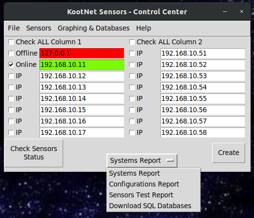

Help Document for KootNet Sensor – Control Center
Kootnet Sensors – Control Center is a Python 3 program used to control Kootnet Sensors. Kootnet Sensors are Raspberry Pi’s that record sensor data to a SQL database for later analysis, more information about KootNet Sensors can be found here.
This document will outline what each part of the program is used for, including screen shots.
The Main Window
The first window that opens is used in almost all other windows as where you select one or more sensors to interact with. If the function can only deal with one sensor but you have selected multiple sensors, only the first checked and online sensor in the list will be used.

Check Sensor Status: Will verify online status for all checked Sensor IP’s. If the sensor is online, it remains checked and the background for the IP is set to green. If the sensor is offline, the IP is automatically unchecked and the background for the IP is set to red. Unchecked IP backgrounds will be reset to white when checking other sensors online status.
Download Sensors Database: Downloads all selected sensor databases with the default web browser.
File Menu:
Control Center Configuration: Set Control Center configuration options.
Open Logs: Opens the folder containing logs in the default file browser.
Save IP List: Saves the currently set IP addresses to be used when the program opens.
Reset IP List: Resets the IP list to its default state.
Quit: Exit the program.
Sensors Menu:
Create Reports: Create HTML sensor reports for current sensor readings, system information or the sensor’s configuration options.
View & Download Logs: View or download sensor logs.
Add Note to Database: Add notes into the selected sensors SQL Database at a set Date & Time.
Send Commands: Send commands to one or more selected sensors.
Update Configurations: Select and update one of 4 configuration files on one or more sensors. View current configurations from one sensor at a time.
Graphing Menu:
Create Graphs: Create Live and Offline graphs using Matplotlib (Live) & Plotly (Offline).
Help Menu:
KootNet Sensors – About: Displays the program version and license.
KootNet Sensors – Website: Opens the programs website in the default web browser.
Sensor Units – Making a Sensor: Opens a HTML document for creating a KootNet Sensor with a Raspberry Pi.
Sensor Units – Help: Opens a HTML help file for the Raspberry Pi Sensor software.